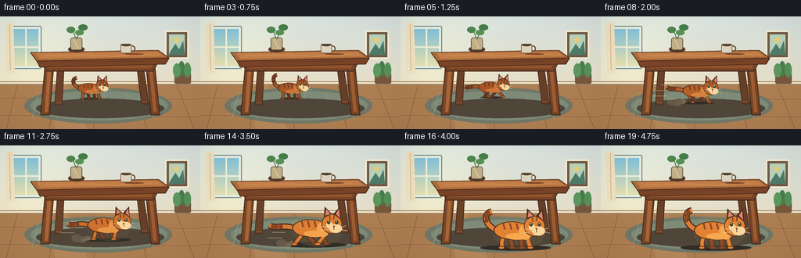
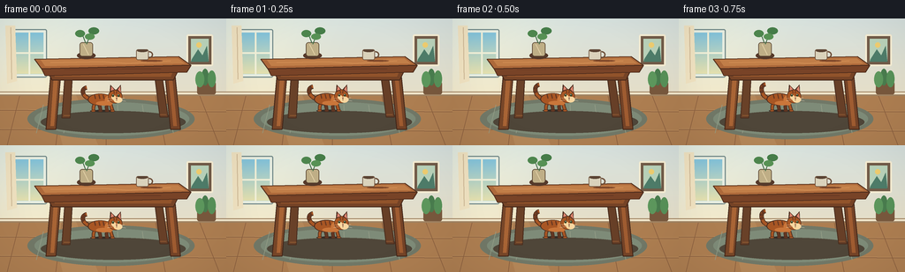

CODING AGENTS AS PIXEL WORLD MODELS
traex/GPT-5.6-Sol · dynamic_spatial_relationship_0017
点击播放 · 原生 RGB 像素
逐轮保存的候选
回放视频、检查图与代码变化。
每份候选均可单独播放。实际图片检查记录在下方工具轨迹中。
候选 01播放与检查图
点击播放 · 原生 RGB 像素


展开代码变化
--- 上一保存版本
+++ 本次保存版本
@@ -0,0 +1,301 @@
+from pathlib import Path
+import json, math
+import numpy as np
+from PIL import Image, ImageDraw, ImageFilter
+import artifact_io
+
+CASE_DIR = Path(__file__).resolve().parent
+spec = json.loads((CASE_DIR / "task_spec.json").read_text())
+W, H = int(spec["width"]), int(spec["height"])
+N = int(spec["frames"])
+S = 4
+
+
+def smoothstep(x):
+ x = max(0.0, min(1.0, x))
+ return x*x*(3.0-2.0*x)
+
+
+def lerp(a,b,t): return a+(b-a)*t
+
+def color_lerp(a,b,t):
+ return tuple(int(lerp(a[i],b[i],t)) for i in range(len(a)))
+
+
+def sc(v): return int(round(v*S))
+def box(b): return tuple(sc(v) for v in b)
+def pts(seq): return [(sc(x),sc(y)) for x,y in seq]
+
+def line(draw, xy, fill, width=1, joint="curve"):
+ draw.line(pts(xy), fill=fill, width=max(1,sc(width)), joint=joint)
+
+def ellipse(draw, b, fill, outline=None, width=1):
+ draw.ellipse(box(b), fill=fill, outline=outline, width=max(1,sc(width)))
+
+def polygon(draw, xy, fill, outline=None):
+ draw.polygon(pts(xy), fill=fill)
+ if outline:
+ draw.line(pts(list(xy)+[xy[0]]), fill=outline, width=sc(1), joint="curve")
+
+def rounded(draw,b,r,fill,outline=None,width=1):
+ draw.rounded_rectangle(box(b),radius=sc(r),fill=fill,outline=outline,width=max(1,sc(width)))
+
+
+def base_background(frame_idx):
+ # softly textured, warmly lit room
+ hh, ww = H*S, W*S
+ yy = np.linspace(0,1,hh)[:,None,None]
+ top = np.array([214,225,222],dtype=float)[None,None,:]
+ bottom = np.array([239,220,185],dtype=float)[None,None,:]
+ arr = top*(1-yy)+bottom*yy
+ arr = np.repeat(arr,ww,axis=1)
+ xx = np.linspace(0,1,ww)[None,:,None]
+ glow = np.exp(-((xx-.14)/.28)**2)*np.array([13,11,3])[None,None,:]
+ arr = np.clip(arr+glow,0,255).astype(np.uint8)
+ im = Image.fromarray(arr,"RGB")
+ d = ImageDraw.Draw(im)
+ # wall trim and floor
+ d.rectangle(box((0,83,W,88)), fill=(160,131,98))
+ d.rectangle(box((0,84,W,86)), fill=(242,231,204))
+ d.rectangle(box((0,88,W,H)), fill=(173,126,81))
+ # floor boards and highlights
+ for y in [104,126]:
+ line(d,[(0,y),(W,y+2)],(127,87,59),.7)
+ line(d,[(0,y-1),(W,y+1)],(201,155,106),.45)
+ for x0,xb in [(22,8),(70,63),(120,120),(176,187),(226,248)]:
+ line(d,[(x0,88),(xb,H)],(137,94,62),.65)
+ # window, with sunny panes
+ rounded(d,(13,12,53,67),2,(232,238,225),(116,139,139),1.2)
+ d.rectangle(box((17,16,49,63)),fill=(151,202,218))
+ for y in range(sc(16),sc(63)):
+ t=(y-sc(16))/max(1,sc(47))
+ c=color_lerp((130,194,218),(229,224,174),t)
+ d.line((sc(17),y,sc(49),y),fill=c)
+ line(d,[(33,16),(33,63)],(240,239,215),2)
+ line(d,[(17,39),(49,39)],(240,239,215),2)
+ # curtain
+ polygon(d,[(6,8),(17,8),(19,71),(8,74)],(239,225,192))
+ line(d,[(12,10),(13,69)],(206,185,151),1)
+ # framed picture
+ rounded(d,(211,18,241,54),2,(113,91,72),(246,237,211),2)
+ d.rectangle(box((216,23,236,49)),fill=(185,210,185))
+ polygon(d,[(217,46),(224,35),(229,42),(234,31),(236,49),(216,49)],(78,124,105))
+ ellipse(d,(222,27,228,33),(239,205,112))
+ # small side plant at right
+ rounded(d,(223,72,244,86),2,(120,88,61))
+ ellipse(d,(228,57,236,76),(73,124,78))
+ ellipse(d,(235,59,244,78),(86,144,88))
+ ellipse(d,(221,60,231,78),(93,151,93))
+ # sun streaks
+ ov=Image.new("RGBA",im.size,(0,0,0,0)); od=ImageDraw.Draw(ov)
+ od.polygon(pts([(48,60),(74,60),(111,144),(71,144)]),fill=(255,235,173,22))
+ im=Image.alpha_composite(im.convert("RGBA"),ov).convert("RGB")
+ return im
+
+
+def draw_rug_and_table_rear(im):
+ d=ImageDraw.Draw(im)
+ # rug and furniture grounding shadows
+ ellipse(d,(31,91,220,137),(113,120,103))
+ ellipse(d,(39,95,214,133),(126,139,120))
+ for k in range(6):
+ line(d,[(49+k*28,98),(41+k*31,130)],(148,157,134),.65)
+ ellipse(d,(46,105,210,130),(79,70,57))
+ # rear legs, desaturated in shade
+ polygon(d,[(74,57),(82,58),(79,113),(70,113)],(105,65,40),(74,45,30))
+ polygon(d,[(174,57),(182,57),(190,112),(181,112)],(103,63,39),(73,44,29))
+ # foot highlights
+ line(d,[(72,110),(79,110)],(139,88,49),1)
+ line(d,[(181,109),(188,109)],(137,84,48),1)
+
+
+def draw_table_front(im):
+ d=ImageDraw.Draw(im)
+ # front legs splay gently toward viewer
+ polygon(d,[(58,57),(69,58),(63,126),(52,126)],(119,70,40),(67,39,26))
+ polygon(d,[(186,57),(197,56),(204,126),(193,126)],(116,67,39),(66,38,25))
+ polygon(d,[(61,61),(66,62),(61,122),(57,122)],(168,100,53))
+ polygon(d,[(190,61),(194,60),(200,122),(196,122)],(159,92,49))
+ # apron beneath table
+ polygon(d,[(50,54),(204,54),(196,70),(59,70)],(117,67,38),(69,40,26))
+ polygon(d,[(59,59),(196,59),(193,66),(62,66)],(145,83,43))
+ # tabletop thick slab and front lip
+ polygon(d,[(39,46),(202,43),(216,53),(47,57)],(173,105,58),(84,50,31))
+ polygon(d,[(47,57),(216,53),(211,61),(51,65)],(120,67,39),(77,44,28))
+ polygon(d,[(46,47),(201,45),(209,51),(51,54)],(193,126,72))
+ # wood grain
+ line(d,[(57,50),(116,49),(145,51),(193,48)],(220,151,91),.75)
+ line(d,[(73,58),(138,57),(182,57)],(91,49,30),.6)
+ ellipse(d,(159,47,184,49),(129,73,42))
+ # objects clearly rest on the tabletop
+ ellipse(d,(87,38,108,46),(85,57,42))
+ rounded(d,(90,27,105,43),3,(191,174,134),(85,64,46),.8)
+ line(d,[(94,29),(100,41)],(226,209,167),1)
+ # leafy stems
+ line(d,[(97,28),(92,15)],(64,107,70),1)
+ line(d,[(98,29),(104,13)],(64,107,70),1)
+ ellipse(d,(85,13,96,21),(77,133,77))
+ ellipse(d,(100,10,112,18),(69,124,72))
+ ellipse(d,(96,17,107,24),(87,145,84))
+ # mug
+ rounded(d,(154,35,168,47),2,(218,210,187),(106,76,55),.8)
+ d.arc(box((164,37,173,45)),270,90,fill=(107,76,55),width=sc(1.5))
+ ellipse(d,(155,35,167,38),(90,67,51))
+
+
+def bezier_points(p0,p1,p2,p3,n=18):
+ out=[]
+ for j in range(n):
+ t=j/(n-1); u=1-t
+ out.append((u**3*p0[0]+3*u*u*t*p1[0]+3*u*t*t*p2[0]+t**3*p3[0],
+ u**3*p0[1]+3*u*u*t*p1[1]+3*u*t*t*p2[1]+t**3*p3[1]))
+ return out
+
+
+def draw_cat(cx, baseline, scale, phase, progress, run_amount):
+ # Cat is drawn on its own transparent layer so edges and whiskers remain clean.
+ layer=Image.new("RGBA",(W*S,H*S),(0,0,0,0)); d=ImageDraw.Draw(layer)
+ def tr(p): return (cx+p[0]*scale, baseline+p[1]*scale)
+ def tpts(seq): return [tr(p) for p in seq]
+ def L(seq, fill, width): line(d,tpts(seq),fill,width*scale)
+ def E(b,fill,outline=None,width=1):
+ x1,y1=tr((b[0],b[1])); x2,y2=tr((b[2],b[3]))
+ ellipse(d,(x1,y1,x2,y2),fill,outline,width*scale)
+ def P(seq,fill,outline=None): polygon(d,tpts(seq),fill,outline)
+
+ coat=color_lerp((168,86,36),(225,126,48),progress)
+ light=color_lerp((202,118,58),(247,165,77),progress)
+ dark=color_lerp((101,55,34),(137,69,35),progress)
+ cream=(250,214,157,255)
+ outline=(75,45,31,255)
+ coat=(*coat,255); light=(*light,255); dark=(*dark,255)
+
+ # tail: lifted while waiting, streaming behind during the run
+ wiggle=math.sin(phase*.72)*3
+ if run_amount < .08:
+ p0=(-22,-21); p1=(-38,-27); p2=(-40,-44+wiggle); p3=(-29,-46+wiggle)
+ else:
+ p0=(-22,-20); p1=(-38,-27); p2=(-48,-19+wiggle); p3=(-55,-25+wiggle)
+ curve=bezier_points(p0,p1,p2,p3)
+ L(curve,outline,8); L(curve,coat,5.2)
+ # tail bands
+ for u in (.48,.68,.86):
+ q=curve[int(u*(len(curve)-1))]
+ E((q[0]-2.4,q[1]-3,q[0]+2.4,q[1]+3),dark)
+
+ # four legs, animated as opposing pairs
+ legs=[]
+ if run_amount>.08 and progress<.97:
+ for anchor,off in [((-15,-13),0),((-7,-13),math.pi),((8,-13),math.pi),((14,-13),0)]:
+ s=math.sin(phase+off)
+ pawx=anchor[0]+s*9
+ pawy=-1-3*max(0,-math.cos(phase+off))
+ knee=((anchor[0]+pawx)*.5-2*s,-7-2*abs(s))
+ legs.append((anchor,knee,(pawx,pawy)))
+ else:
+ legs=[((-15,-14),(-17,-7),(-17,0)),((-7,-13),(-5,-6),(-4,0)),
+ ((8,-14),(7,-7),(8,0)),((14,-13),(16,-6),(18,0))]
+ # far legs first, slightly darker
+ for idx,(a,k,paw) in enumerate(legs):
+ c=dark if idx in (1,2) else coat
+ L([a,k,paw],outline,6.4); L([a,k,paw],c,4.2)
+ E((paw[0]-4,paw[1]-2,paw[0]+4,paw[1]+1.8),c,outline,.7)
+
+ # torso, chest, neck
+ E((-27,-32,18,-10),outline)
+ E((-25.5,-31,17,-11),coat)
+ E((4,-29,20,-10),light)
+ # warm belly patch
+ E((-12,-18,16,-10),light)
+ # body stripes following the round back
+ for x,h in [(-15,8),(-7,10),(1,8)]:
+ L([(x,-30),(x+2,-23+h*.08)],dark,2.1)
+ # head and muzzle
+ E((10,-39,36,-14),outline)
+ E((11,-38,35,-15),coat)
+ # ears with dark outer silhouette and pink interior
+ P([(13,-34),(14,-48),(23,-39)],outline)
+ P([(25,-39),(33,-48),(34,-32)],outline)
+ P([(15,-37),(16,-45),(21,-39)],(222,133,111,255))
+ P([(28,-39),(32,-45),(33,-34)],(222,133,111,255))
+ # forehead stripes
+ L([(20,-38),(21,-32)],dark,1.8); L([(26,-38),(25,-32)],dark,1.8)
+ # muzzle and face
+ E((20,-26,36,-15),cream)
+ E((16,-29,24,-21),cream)
+ # eyes remain readable, with tiny catchlights
+ for ex in (19,29):
+ E((ex-2,-31,ex+2,-26),(51,70,42,255),outline,.45)
+ E((ex-.6,-30.5,ex+.2,-28.9),(239,248,214,255))
+ P([(24,-24),(27,-24),(25.5,-21.5)],(116,59,55,255))
+ L([(25.5,-21.5),(25.5,-19)],outline,.7)
+ # whiskers
+ L([(21,-22),(10,-23)],(244,230,203,235),.65)
+ L([(21,-20),(9,-18)],(244,230,203,235),.65)
+ L([(30,-22),(40,-24)],(244,230,203,235),.65)
+ L([(30,-20),(42,-18)],(244,230,203,235),.65)
+ return layer
+
+
+def render_frame(i):
+ im=base_background(i).convert("RGBA")
+ draw_rug_and_table_rear(im)
+ # Hold beneath the table, then accelerate toward the foreground.
+ if i <= 4:
+ p=0.0
+ elif i <= 16:
+ p=smoothstep((i-4)/12.0)
+ else:
+ p=1.0
+ moving = 1.0 if 5 <= i <= 15 else 0.0
+ phase=(i-4)*1.75
+ cx=116 + 31*p
+ baseline=105 + 26*p
+ scale=.62 + .43*p
+ bob=(2.0*abs(math.sin(phase))) if moving else (0.45*math.sin(i*.8))
+ baseline-=bob
+
+ # Contact shadow grows and moves toward the camera, a strong depth cue.
+ d=ImageDraw.Draw(im)
+ sw=(23+20*p)*scale; sh=(4+3*p)*scale
+ ellipse(d,(cx-sw,baseline-sh/2,cx+sw,baseline+sh/2),(50,45,39,95))
+
+ # A few dust puffs and speed accents emerge once the cat starts running.
+ if 7 <= i <= 14:
+ dust=Image.new("RGBA",im.size,(0,0,0,0)); dd=ImageDraw.Draw(dust)
+ for k in range(3):
+ dx=cx-27*scale-k*7; dy=baseline-2+k%2*2
+ ellipse(dd,(dx-4-k,dy-3-k,dx+5+k,dy+3+k),(225,199,155,55-8*k))
+ for k in range(3):
+ line(dd,[(cx-47-k*6,baseline-23+k*7),(cx-32-k*4,baseline-23+k*7)],(245,224,183,90),1)
+ im=Image.alpha_composite(im,dust)
+
+ cat=draw_cat(cx,baseline,scale,phase,p,moving)
+ # Under the table the cat is behind the front legs; after crossing the near
+ # edge it overlays them. This explicit occlusion change communicates "front".
+ if p < .48:
+ im=Image.alpha_composite(im,cat)
+ draw_table_front(im)
+ else:
+ draw_table_front(im)
+ im=Image.alpha_composite(im,cat)
+
+ # Slight warm highlight once out of the table's shadow.
+ if p>.55:
+ glow=Image.new("RGBA",im.size,(0,0,0,0)); gd=ImageDraw.Draw(glow)
+ ellipse(gd,(cx-28*scale,baseline-43*scale,cx+37*scale,baseline+2*scale),(255,205,106,int(13*p)))
+ im=Image.alpha_composite(im,glow)
+
+ # Downsample supersampled artwork, then apply a subtle photographic vignette.
+ rgb=im.convert("RGB").resize((W,H),Image.Resampling.LANCZOS)
+ arr=np.asarray(rgb).astype(np.float32)
+ yy,xx=np.mgrid[0:H,0:W]
+ rr=((xx-W*.5)/(W*.73))**2+((yy-H*.48)/(H*.86))**2
+ vig=np.clip(1-.10*np.maximum(rr-.25,0),.88,1.0)[...,None]
+ arr=np.clip(arr*vig,0,255).astype(np.uint8)
+ return arr
+
+frames=np.stack([render_frame(i) for i in range(N)],axis=0)
+assert frames.shape==(N,H,W,3) and frames.dtype==np.uint8
+artifact_io.save(frames, CASE_DIR)
+print(f"saved {N} RGB frames: {frames.shape}, {frames.dtype}")
可观测工具轨迹
实际执行的命令与返回图片。
命令 1exit 0
/bin/bash -lc "cat prompt.txt && printf '\\n---RULES---\\n' && cat GENERATION_RULES.md && printf '\\n---SPEC---\\n' && cat task_spec.json"
命令 2exit 0
/bin/bash -lc "find . -maxdepth 2 -type f -printf '%p\\n' | sort && printf '\\nTOOLS\\n' && command -v ffmpeg || true && command -v python3 || true"
命令 3exit 0
/bin/bash -lc "sed -n '1,240p' artifact_io.py"
命令 4exit 2
/bin/bash -lc "cat > generate.py <<'PY'
from pathlib import Path
import json, math
import numpy as np
from PIL import Image, ImageDraw, ImageFilter
import artifact_io
CASE_DIR = Path(__file__).resolve().parent
spec = json.loads((CASE_DIR / \"task_spec.json\").read_text())
W, H = int(spec[\"width\"]), int(spec[\"height\"])
N = int(spec[\"frames\"])
S = 4
def smoothstep(x):
x = max(0.0, min(1.0, x))
return x*x*(3.0-2.0*x)
def lerp(a,b,t): return a+(b-a)*t
def color_lerp(a,b,t):
return tuple(int(lerp(a[i],b[i],t)) for i in range(len(a)))
def sc(v): return int(round(v*S))
def box(b): return tuple(sc(v) for v in b)
def pts(seq): return [(sc(x),sc(y)) for x,y in seq]
def line(draw, xy, fill, width=1, joint=\"curve\"):
draw.line(pts(xy), fill=fill, width=max(1,sc(width)), joint=joint)
def ellipse(draw, b, fill, outline=None, width=1):
draw.ellipse(box(b), fill=fill, outline=outline, width=max(1,sc(width)))
def polygon(draw, xy, fill, outline=None):
draw.polygon(pts(xy), fill=fill)
if outline:
draw.line(pts(list(xy)+[xy[0]]), fill=outline, width=sc(1), joint=\"curve\")
def rounded(draw,b,r,fill,outline=None,width=1):
draw.rounded_rectangle(box(b),radius=sc(r),fill=fill,outline=outline,width=max(1,sc(width)))
def base_background(frame_idx):
# softly textured, warmly lit room
hh, ww = H*S, W*S
yy = np.linspace(0,1,hh)[:,None,None]
top = np.array([214,225,222],dtype=float)[None,None,:]
bottom = np.array([239,220,185],dtype=float)[None,None,:]
arr = top*(1-yy)+bottom*yy
arr = np.repeat(arr,ww,axis=1)
xx = np.linspace(0,1,ww)[None,:,None]
glow = np.exp(-((xx-.14)/.28)**2)*np.array([13,11,3])[None,None,:]
arr = np.clip(arr+glow,0,255).astype(np.uint8)
im = Image.fromarray(arr,\"RGB\")
d = ImageDraw.Draw(im)
# wall trim and floor
d.rectangle(box((0,83,W,88)), fill=(160,131,98))
d.rectangle(box((0,84,W,86)), fill=(242,231,204))
d.rectangle(box((0,88,W,H)), fill=(173,126,81))
# floor boards and highlights
for y in [104,126]:
line(d,[(0,y),(W,y+2)],(127,87,59),.7)
line(d,[(0,y-1),(W,y+1)],(201,155,106),.45)
for x0,xb in [(22,8),(70,63),(120,120),(176,187),(226,248)]:
line(d,[(x0,88),(xb,H)],(137,94,62),.65)
# window, with sunny panes
rounded(d,(13,12,53,67),2,(232,238,225),(116,139,139),1.2)
d.rectangle(box((17,16,49,63)),fill=(151,202,218))
for y in range(sc(16),sc(63)):
t=(y-sc(16))/max(1,sc(47))
c=color_lerp((130,194,218),(229,224,174),t)
d.line((sc(17),y,sc(49),y),fill=c)
line(d,[(33,16),(33,63)],(240,239,215),2)
line(d,[(17,39),(49,39)],(240,239,215),2)
# curtain
polygon(d,[(6,8),(17,8),(19,71),(8,74)],(239,225,192))
line(d,[(12,10),(13,69)],(206,185,151),1)
# framed picture
rounded(d,(211,18,241,54),2,(113,91,72),(246,237,211),2)
d.rectangle(box((216,23,236,49)),fill=(185,210,185))
polygon(d,[(217,46),(224,35),(229,42),(234,31),(236,49),(216,49)],(78,124,105))
ellipse(d,(222,27,228,33),(239,205,112))
# small side plant at right
rounded(d,(223,72,244,86),2,(120,88,61))
ellipse(d,(228,57,236,76),(73,124,78))
ellipse(d,(235,59,244,78),(86,144,88))
ellipse(d,(221,60,231,78),(93,151,93))
# sun streaks
ov=Image.new(\"RGBA\",im.size,(0,0,0,0)); od=ImageDraw.Draw(ov)
od.polygon(pts([(48,60),(74,60),(111,144),(71,144)]),fill=(255,235,173,22))
im=Image.alpha_composite(im.convert(\"RGBA\"),ov).convert(\"RGB\")
return im
def draw_rug_and_table_rear(im):
d=ImageDraw.Draw(im)
# rug and furniture grounding shadows
ellipse(d,(31,91,220,137),(113,120,103))
ellipse(d,(39,95,214,133),(126,139,120))
for k in range(6):
line(d,[(49+k*28,98),(41+k*31,130)],(148,157,134),.65)
ellipse(d,(46,105,210,130),(79,70,57))
# rear legs, desaturated in shade
polygon(d,[(74,57),(82,58),(79,113),(70,113)],(105,65,40),(74,45,30))
polygon(d,[(174,57),(182,57),(190,112),(181,112)],(103,63,39),(73,44,29))
# foot highlights
line(d,[(72,110),(79,110)],(139,88,49),1)
line(d,[(181,109),(188,109)],(137,84,48),1)
def draw_table_front(im):
d=ImageDraw.Draw(im)
# front legs splay gently toward viewer
polygon(d,[(58,57),(69,58),(63,126),(52,126)],(119,70,40),(67,39,26))
polygon(d,[(186,57),(197,56),(204,126),(193,126)],(116,67,39),(66,38,25))
polygon(d,[(61,61),(66,62),(61,122),(57,122)],(168,100,53))
polygon(d,[(190,61),(194,60),(200,122),(196,122)],(159,92,49))
# apron beneath table
polygon(d,[(50,54),(204,54),(196,70),(59,70)],(117,67,38),(69,40,26))
polygon(d,[(59,59),(196,59),(193,66),(62,66)],(145,83,43))
# tabletop thick slab and front lip
polygon(d,[(39,46),(202,43),(216,53),(47,57)],(173,105,58),(84,50,31))
polygon(d,[(47,57),(216,53),(211,61),(51,65)],(120,67,39),(77,44,28))
polygon(d,[(46,47),(201,45),(209,51),(51,54)],(193,126,72))
# wood grain
line(d,[(57,50),(116,49),(145,51),(193,48)],(220,151,91),.75)
line(d,[(73,58),(138,57),(182,57)],(91,49,30),.6)
ellipse(d,(159,47,184,49),(129,73,42))
# objects clearly rest on the tabletop
ellipse(d,(87,38,108,46),(85,57,42))
rounded(d,(90,27,105,43),3,(191,174,134),(85,64,46),.8)
line(d,[(94,29),(100,41)],(226,209,167),1)
# leafy stems
line(d,[(97,28),(92,15)],(64,107,70),1)
line(d,[(98,29),(104,13)],(64,107,70),1)
ellipse(d,(85,13,96,21),(77,133,77))
ellipse(d,(100,10,112,18),(69,124,72))
ellipse(d,(96,17,107,24),(87,145,84))
# mug
rounded(d,(154,35,168,47),2,(218,210,187),(106,76,55),.8)
d.arc(box((164,37,173,45)),270,90,fill=(107,76,55),width=sc(1.5))
ellipse(d,(155,35,167,38),(90,67,51))
def bezier_points(p0,p1,p2,p3,n=18):
out=[]
for j in range(n):
t=j/(n-1); u=1-t
out.append((u**3*p0[0]+3*u*u*t*p1[0]+3*u*t*t*p2[0]+t**3*p3[0],
u**3*p0[1]+3*u*u*t*p1[1]+3*u*t*t*p2[1]+t**3*p3[1]))
return out
def draw_cat(cx, baseline, scale, phase, progress, run_amount):
# Cat is drawn on its own transparent layer so edges and whiskers remain clean.
layer=Image.new(\"RGBA\",(W*S,H*S),(0,0,0,0)); d=ImageDraw.Draw(layer)
def tr(p): return (cx+p[0]*scale, baseline+p[1]*scale)
def tpts(seq): return [tr(p) for p in seq]
def L(seq, fill, width): line(d,tpts(seq),fill,width*scale)
def E(b,fill,outline=None,width=1):
x1,y1=tr((b[0],b[1])); x2,y2=tr((b[2],b[3]))
ellipse(d,(x1,y1,x2,y2),fill,outline,width*scale)
def P(seq,fill,outline=None): polygon(d,tpts(seq),fill,outline)
coat=color_lerp((168,86,36),(225,126,48),progress)
light=color_lerp((202,118,58),(247,165,77),progress)
dark=color_lerp((101,55,34),(137,69,35),progress)
cream=(250,214,157,255)
outline=(75,45,31,255)
coat=(*coat,255); light=(*light,255); dark=(*dark,255)
# tail: lifted while waiting, streaming behind during the run
wiggle=math.sin(phase*.72)*3
if run_amount < .08:
p0=(-22,-21); p1=(-38,-27); p2=(-40,-44+wiggle); p3=(-29,-46+wiggle)
else:
p0=(-22,-20); p1=(-38,-27); p2=(-48,-19+wiggle); p3=(-55,-25+wiggle)
curve=bezier_points(p0,p1,p2,p3)
L(curve,outline,8); L(curve,coat,5.2)
# tail bands
for u in (.48,.68,.86):
q=curve[int(u*(len(curve)-1))]
E((q[0]-2.4,q[1]-3,q[0]+2.4,q[1]+3),dark)
# four legs, animated as opposing pairs
legs=[]
if run_amount>.08 and progress<.97:
for anchor,off in [((-15,-13),0),((-7,-13),math.pi),((8,-13),math.pi),(14,-13),0)]:
s=math.sin(phase+off)
pawx=anchor[0]+s*9
pawy=-1-3*max(0,-math.cos(phase+off))
knee=((anchor[0]+pawx)*.5-2*s,-7-2*abs(s))
legs.append((anchor,knee,(pawx,pawy)))
else:
legs=[((-15,-14),(-17,-7),(-17,0)),((-7,-13),(-5,-6),(-4,0)),
((8,-14),(7,-7),(8,0)),((14,-13),(16,-6),(18,0))]
# far legs first, slightly darker
for idx,(a,k,paw) in enumerate(legs):
c=dark if idx in (1,2) else coat
L([a,k,paw],outline,6.4); L([a,k,paw],c,4.2)
E((paw[0]-4,paw[1]-2,paw[0]+4,paw[1]+1.8),c,outline,.7)
# torso, chest, neck
E((-27,-32,18,-10),outline)
E((-25.5,-31,17,-11),coat)
E((4,-29,20,-10),light)
# warm belly patch
E((-12,-18,16,-10),light)
# body stripes following the round back
for x,h in [(-15,8),(-7,10),(1,8)]:
L([(x,-30),(x+2,-23+h*.08)],dark,2.1)
# head and muzzle
E((10,-39,36,-14),outline)
E((11,-38,35,-15),coat)
# ears with dark outer silhouette and pink interior
P([(13,-34),(14,-48),(23,-39)],outline)
P([(25,-39),(33,-48),(34,-32)],outline)
P([(15,-37),(16,-45),(21,-39)],(222,133,111,255))
P([(28,-39),(32,-45),(33,-34)],(222,133,111,255))
# forehead stripes
L([(20,-38),(21,-32)],dark,1.8); L([(26,-38),(25,-32)],dark,1.8)
# muzzle and face
E((20,-26,36,-15),cream)
E((16,-29,24,-21),cream)
# eyes remain readable, with tiny catchlights
for ex in (19,29):
E((ex-2,-31,ex+2,-26),(51,70,42,255),outline,.45)
E((ex-.6,-30.5,ex+.2,-28.9),(239,248,214,255))
P([(24,-24),(27,-24),(25.5,-21.5)],(116,59,55,255))
L([(25.5,-21.5),(25.5,-19)],outline,.7)
# whiskers
L([(21,-22),(10,-23)],(244,230,203,235),.65)
L([(21,-20),(9,-18)],(244,230,203,235),.65)
L([(30,-22),(40,-24)],(244,230,203,235),.65)
L([(30,-20),(42,-18)],(244,230,203,235),.65)
return layer
def render_frame(i):
im=base_background(i).convert(\"RGBA\")
draw_rug_and_table_rear(im)
# Hold beneath the table, then accelerate toward the foreground.
if i <= 4:
p=0.0
elif i <= 16:
p=smoothstep((i-4)/12.0)
else:
p=1.0
moving = 1.0 if 5 <= i <= 15 else 0.0
phase=(i-4)*1.75
cx=116 + 31*p
baseline=105 + 26*p
scale=.62 + .43*p
bob=(2.0*abs(math.sin(phase))) if moving else (0.45*math.sin(i*.8))
baseline-=bob
# Contact shadow grows and moves toward the camera, a strong depth cue.
d=ImageDraw.Draw(im)
sw=(23+20*p)*scale; sh=(4+3*p)*scale
ellipse(d,(cx-sw,baseline-sh/2,cx+sw,baseline+sh/2),(50,45,39,95))
# A few dust puffs and speed accents emerge once the cat starts running.
if 7 <= i <= 14:
dust=Image.new(\"RGBA\",im.size,(0,0,0,0)); dd=ImageDraw.Draw(dust)
for k in range(3):
dx=cx-27*scale-k*7; dy=baseline-2+k%2*2
ellipse(dd,(dx-4-k,dy-3-k,dx+5+k,dy+3+k),(225,199,155,55-8*k))
for k in range(3):
line(dd,[(cx-47-k*6,baseline-23+k*7),(cx-32-k*4,baseline-23+k*7)],(245,224,183,90),1)
im=Image.alpha_composite(im,dust)
cat=draw_cat(cx,baseline,scale,phase,p,moving)
# Under the table the cat is behind the front legs; after crossing the near
# edge it overlays them. This explicit occlusion change communicates \"front\".
if p < .48:
im=Image.alpha_composite(im,cat)
draw_table_front(im)
else:
draw_table_front(im)
im=Image.alpha_composite(im,cat)
# Slight warm highlight once out of the table's shadow.
if p>.55:
glow=Image.new(\"RGBA\",im.size,(0,0,0,0)); gd=ImageDraw.Draw(glow)
ellipse(gd,(cx-28*scale,baseline-43*scale,cx+37*scale,baseline+2*scale),(255,205,106,int(13*p)))
im=Image.alpha_composite(im,glow)
# Downsample supersampled artwork, then apply a subtle photographic vignette.
rgb=im.convert(\"RGB\").resize((W,H),Image.Resampling.LANCZOS)
arr=np.asarray(rgb).astype(np.float32)
yy,xx=np.mgrid[0:H,0:W]
rr=((xx-W*.5)/(W*.73))**2+((yy-H*.48)/(H*.86))**2
vig=np.clip(1-.10*np.maximum(rr-.25,0),.88,1.0)[...,None]
arr=np.clip(arr*vig,0,255).astype(np.uint8)
return arr
frames=np.stack([render_frame(i) for i in range(N)],axis=0)
assert frames.shape==(N,H,W,3) and frames.dtype==np.uint8
artifact_io.save(frames, CASE_DIR)
print(f\"saved {N} RGB frames: {frames.shape}, {frames.dtype}\")
PY
python3 generate.py
ls -lh pixels.npz inspection.png frames/00.png frames/19.png index.html"命令 5exit 0
/bin/bash -lc "python3 generate.py && ls -lh pixels.npz inspection.png frames/00.png frames/19.png index.html && python3 - <<'PY'
import numpy as np
from PIL import Image
z=np.load('pixels.npz')['pixels']
print('packed',z.shape,z.dtype,'unique first,last',len(np.unique(z[:,:,0])),len(np.unique(z[:,:,-1])))
print('mean frame diffs', [round(float(np.abs(np.asarray(Image.open(f'frames/{i:02}.png')).astype(float)-np.asarray(Image.open(f'frames/{i-1:02}.png')).astype(float)).mean()),2) for i in range(1,20)])
PY"保存候选 1 份；完成命令 5 次；可验证图片返回 0 张。原始 API 响应与完整日志保留在本地。